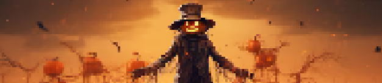

Na noite de 31 de outubro, as pessoas apagavam tochas e fogueiras, vestiam fantasias elaboradas, vagando pelo bairro de forma barulhenta, com risos, gritos e o balanço de doces em sacolas, com o intuito de espantar os espÃritos errantes que "vagavam" pela noite em busca de corpos para possuir na véspera do Dia de Todos os Santos.
"Doces ou travessuras" teve origem na tradição europeia antiga, que consiste na prática cristã durante o Dia de Todos os Santos. Nessa época, os fiéis pediam "soul cakes", pequenas bolachas feitas para esta única ocasião. Em troca dessas iguarias, as pessoas se comprometiam a orar pela alma dos mortos, para que eles saÃssem do limbo e alcançassem o céu.
Apesar de ser uma festa originária de práticas pagãs, Halloween é um nome moderno que surgiu de uma celebração cristã estabelecida na Idade Média — a véspera do Dia de Todos os Santos, conhecida como All Hallows’ Eve. Nesta data, os cristãos se preparavam para honrar os santos e as almas dos falecidos, refletindo sobre a vida e a morte.
